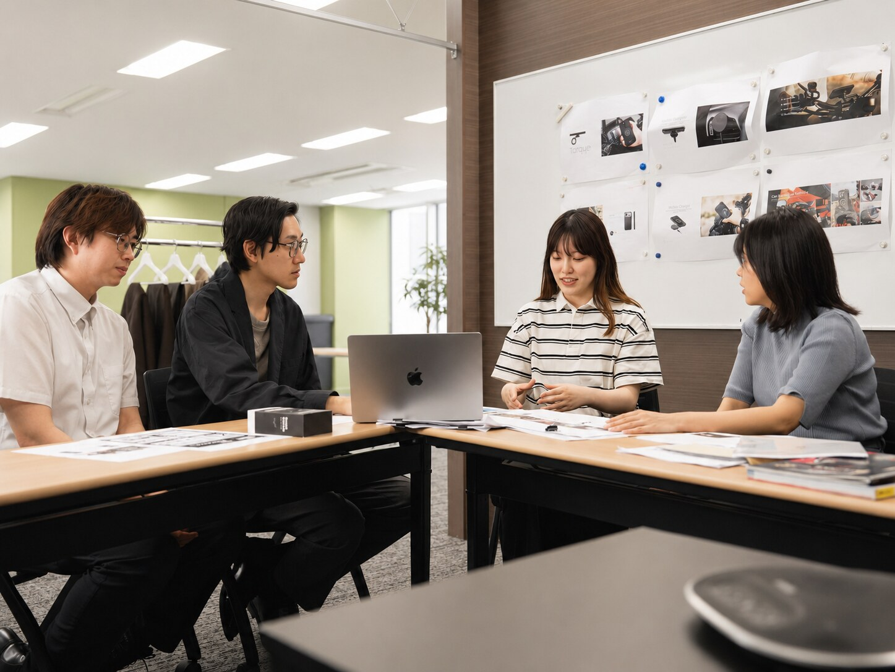
学生のうちに、
ブランドと事業をつくる。
モビリティは、入り口。
持ち帰るのは、AI時代にも消えないビジネススキル。
乗り物好きは大歓迎。でも詳しくなくても大丈夫。
企画・マーケ・SNS・制作・海外取引——"手伝い"ではなく"実戦"で、どこでも通用する力が身につきます。
WHY CUSTOM JAPAN
「任される」が、
いちばん成長する。
私たちはこの数年で、電動モビリティ「eXs」、スマートガジェット群「スマートシリーズ」、世界ブランドの日本展開(ASMAX・SP Connectなど)と、新しい事業を次々に立ち上げてきました。大阪・関西万博を走り、エヴァンゲリオンとコラボし、鈴鹿8耐に出展する——その現場は、いつも人手より挑戦の数のほうが多い。
だからインターンにも、企画書のコピー取りではなく「ひとつの持ち場」を任せます。市場調査から企画、SNSでの発信、制作、そして結果の数字まで。学生のうちに、事業の当事者になってください。
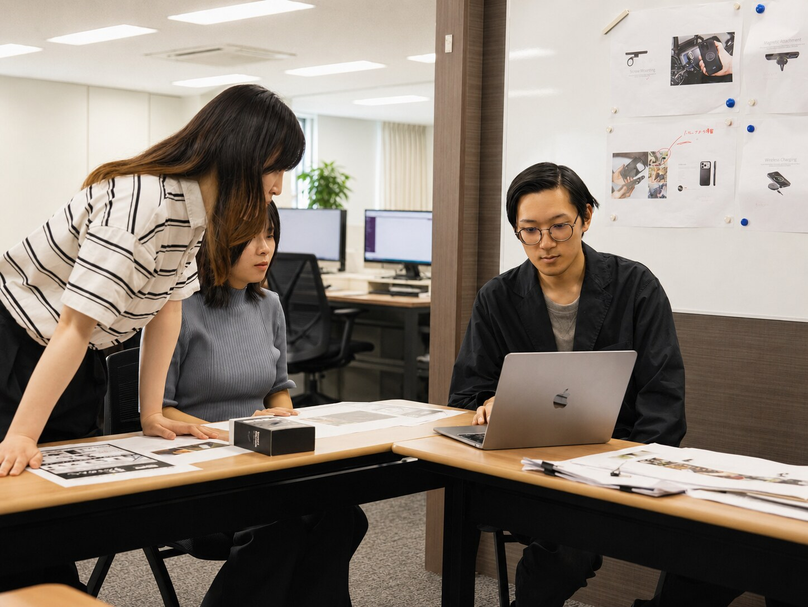
FIELD OF CHALLENGE
OPEN POSITIONS
募集中の2職種
どちらも社員メンターと二人三脚。興味と適性に合わせて、担当領域を一緒に設計します。
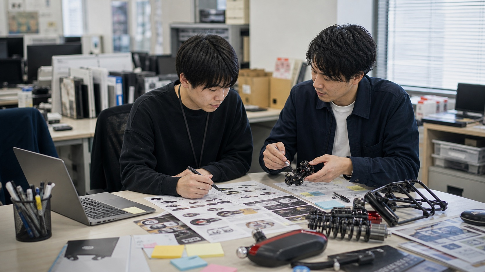
企画・マーケティング
PLANNING & MARKETING
商品・ブランドをどう売るかを、調査、企画、発信、数字確認まで実案件で担当します。
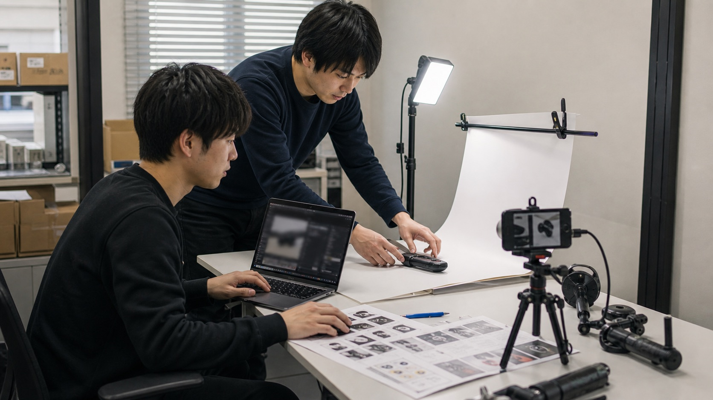
クリエイティブ制作
CREATIVE PRODUCTION
商品撮影、画像制作、LP、動画編集など、実際に公開される制作物をつくります。
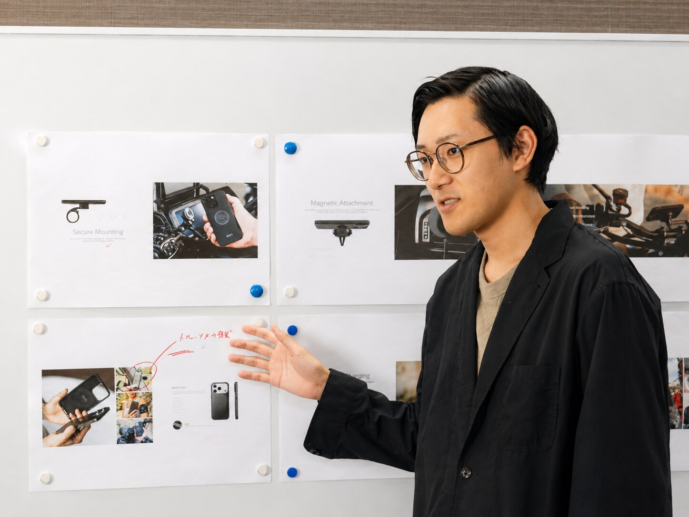
WHAT YOU GET
ここで得られる、
4つのもの。
- 企画書
- 商品画像
- 分析レポート
就活で「実名で語れる」成果物が、
学生のうちに手元に残る。
4 THINGS YOU GET
実名で語れる、実績。
SNS、販促、商品企画など、自分が関わった案件を「これは私がやりました」と語れます。就活で刺さるのは、盛った自己PRより、本物の一件。
経営との距離、ゼロ。
役員・事業責任者のすぐ近くで働く環境。「なぜその判断をしたのか」まで、意思決定の理由を間近で学べます。
ポートフォリオになる、仕事。
制作物、企画書、運用実績がそのまま作品集に。学生のうちに「見せられる武器」を手にして卒業できます。
乗り物×カルチャーの、現場。
展示会、レース、ブランド企画——人と熱量が集まる現場のリアルを、当事者として体感できます。
ATMOSPHERE
働く場所の、空気感。
若手が多く、役員との距離も近い。商品企画のミーティングから雑談まで、風通しのいい現場です。実際の職場の雰囲気を、そのままお見せします。
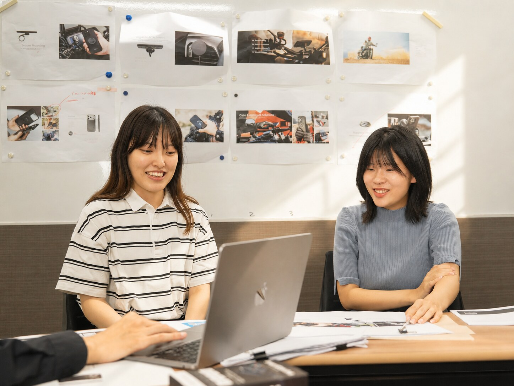
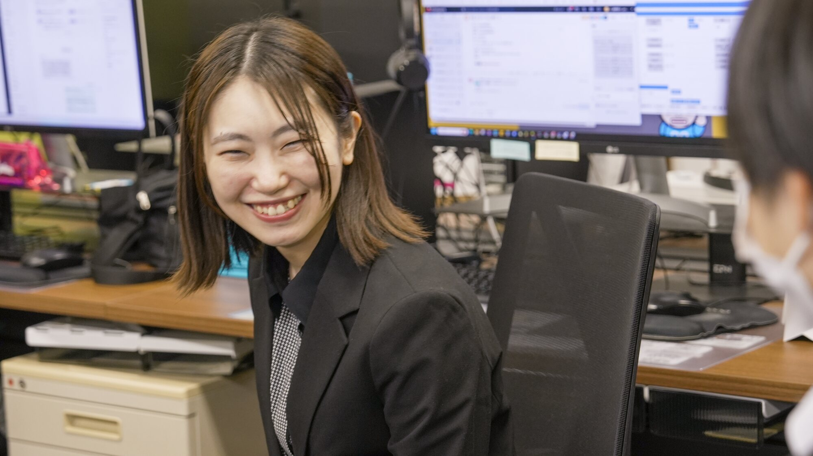
WORKS
あなたが関わるのは、実際に世に出る仕事。
電動モビリティ「eXs」やスマートインカム「ASMAX」など、自社ブランドのSNS・広告クリエイティブから、インフルエンサーとのタイアップまで。学生のうちに、公開される制作物と数字の出る施策を、実名で担当できます。
FOR THE AI GENERATION
AI時代に、どこで身を立てるか。
「AIに仕事を奪われるんじゃないか」「何を勉強すれば食べていけるのか」——
その不安、ごまかさずに一緒に考えます。
結論から言うと、AI時代に強いのは「AIが代替できない事業基盤」の上で「AIを使う側」に回った人です。カスタムジャパンがその条件を満たしている理由と、ここで注力してほしいことを、率直に書きます。
- 定型的な資料・原稿の作成
- 情報の収集と整理
- 文章・コードの下書き
- データの一次分析
- 海外メーカーとの交渉と信頼づくり
- 展示会・レース現場の熱量づくり
- 独自データを持つ事業の運営
- 「何をやるか」を決める判断
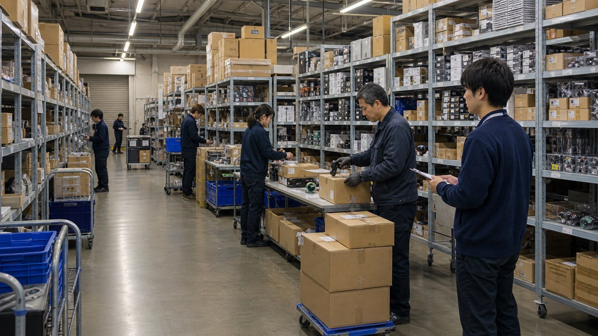
AIだけでは動かせない、物流と在庫の現場がある。
商品、在庫、梱包、出荷。実際にモノが動く基盤の上で、AIを企画・分析・制作の道具として使います。
ON THE FLOOR — 物流・出荷の現場
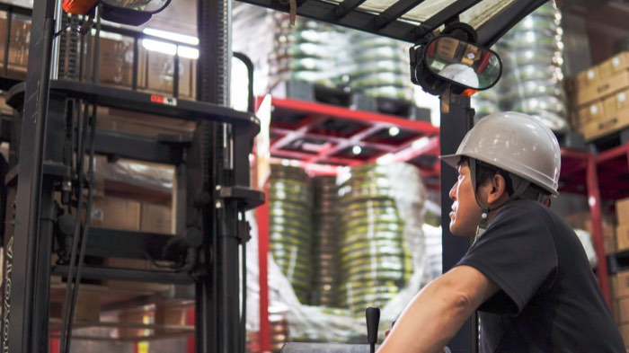
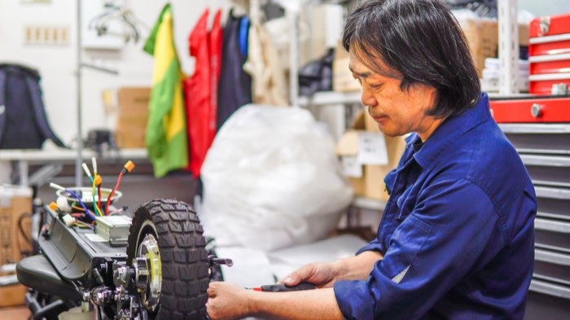
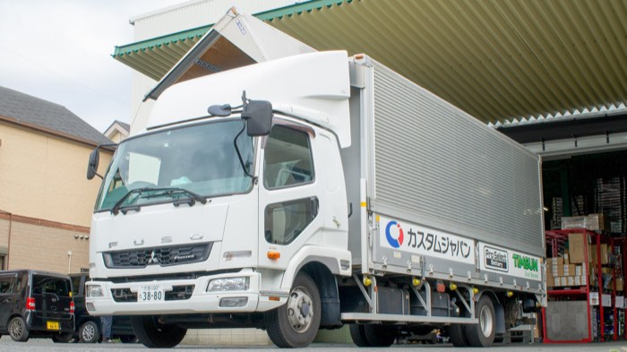
モノが動く、物理世界の事業
AIは文章もコードも書けますが、バイクの部品を今日中に整備工場へ届けることはできません。50万SKUの在庫と当日出荷の物流網という「フィジカルな基盤」は、AIに置き換えられる側ではなく、AIで強くなる側の事業です。
70年分の、誰も持っていないデータ
AI時代の価値の源泉は「独自データ」です。世界最大級のバイク適合データベース、全国9万店との取引履歴、半世紀を超える部品情報。この資産はAIを賢くする側のもので、後発が真似できません。
ニッチ市場のリーダーという位置
巨大市場はAIスタートアップと大資本の主戦場になります。モビリティアフターマーケットというニッチで確固たる地位があるからこそ、価格競争に巻き込まれず、AIを道具として使う余裕があります。
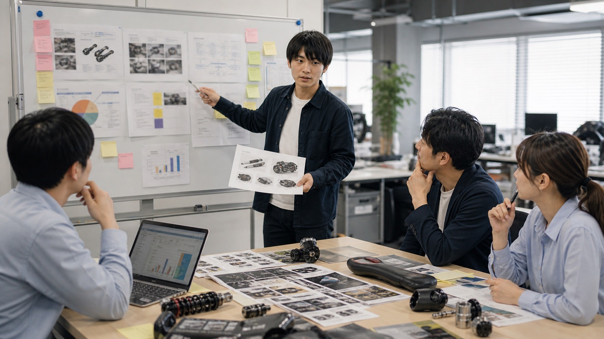
提案し、議論し、決める場に立つ。
調べたことを資料にして終わりではなく、社員の前で提案し、何をやるかを一緒に決める経験を積みます。
だから、若いうちにここへ注力してほしい
AIを「使い倒す側」の実務経験
企画・制作・分析の現場で、AIツールを使うことを歓迎します。「AIを禁止する会社」と「AIで若手の生産性を上げる会社」なら、選ぶべきは後者。使い方は仕事の中でしか身につきません。
AIの外側にある、体温のある仕事
海外メーカーとの交渉、展示会やレースの現場、ブランドの世界観づくり。人と会い、信頼をつくり、熱量を動かす仕事はAIに代替されません。ここでしか積めない経験を、学生のうちに。
「決める」経験
AIの進化で、実行のコストはどんどん下がります。価値が上がるのは「何をやるか決める人」。インターンに小さくても持ち場と意思決定を任せるのは、この筋肉を鍛えてほしいからです。
他の会社と、何がちがうのか
大手企業のインターン
ブランド力と研修は魅力。ただし数日間のプログラム型が多く、分業の一部を体験して終わることも。事業の全体像や意思決定には、なかなか触れられません。
スタートアップのインターン
裁量は大きい一方、事業基盤が不安定で、教える余裕がない環境も。任されているようで、実は放置されている——というミスマッチも起こりがちです。
カスタムジャパン
創業以来20年以上連続増収の安定した土台の上で、新ブランド立ち上げという挑戦の現場に入れる。社員メンターがつき、裁量と伴走の両方がある。「安定×挑戦」のいいとこ取りが、ここの本質です。
REQUIREMENTS
募集要項
| 募集職種 | 企画・マーケティング / クリエイティブ制作 |
|---|---|
| 対象 | 大学生・大学院生・専門学校生・高専生(学年不問)。既卒・第二新卒・高卒・海外大学の方も歓迎します。 |
| 期間 | 6ヶ月以上を推奨(長期での成長を重視するため) |
| 勤務 | 週3日以上。テスト期間など学業優先のシフト調整OK |
| 場所 | 大阪本社(大阪市中央区日本橋2-9-16 日本橋センタービル6F)／「なんば」徒歩圏(御堂筋線なんば駅 徒歩6分・南海／近鉄／阪神も徒歩圏) |
| 待遇 | 時給1,300円〜 / 交通費支給 |
| 歓迎 | 乗り物・ガジェット好き / SNSをよく使う / デザイン・動画ツール経験 / 語学を活かしたい方 ※バイクの知識は不要です |
| 選考 | エントリー → カジュアル面談(オンライン可)→ 職場見学 → 参画 |
ACCESS
通いやすい、なんば。
「なんば」まで徒歩圏
御堂筋線「なんば」駅から徒歩6分。南海「なんば」・近鉄／阪神「大阪難波」も徒歩圏です。
〒542-0073 大阪市中央区日本橋2-9-16 日本橋センタービル6F
「なんば」は南海・近鉄・阪神・大阪メトロ・JRが集まる関西屈指のターミナル。大阪の大学に通う学生はもちろん、阪神なんば線で兵庫から、近鉄で奈良から、南海本線で南大阪・和歌山から——乗り換えなく通える学生が一気に広がります。学業とインターンを無理なく両立できる立地です。
Googleマップで見る →- 大阪御堂筋線ほか各線「なんば」駅から徒歩6分。市内どこからでも好アクセス。
- 兵庫阪神なんば線で神戸・尼崎方面から「大阪難波」へ乗り換えなく直通。
- 奈良近鉄奈良線で奈良・生駒方面から「大阪難波」へ直通。
- 南大阪
和歌山南海本線・高野線で堺・岸和田・和歌山方面から「南海なんば」へ直通。 - 京都近鉄・京阪など複数ルートで京都方面から。大阪↔京都の通学ルート上でアクセス良好。
FAQ
よくある質問
バイクや自転車に詳しくないのですが大丈夫ですか？
大丈夫です。必要なのは知識より「面白がる力」。乗り物の知識は仕事の中で自然と身につきますし、詳しくないからこそ見える初心者目線も貴重な戦力です。
未経験でも応募できますか？
できます。社員メンターがつき、小さな担当から始めて段階的に任せる範囲を広げていきます。制作職はツール経験があるとスタートが早いです。
授業やテストとの両立はできますか？
学業優先が原則です。シフトは週ごとに調整でき、テスト期間・就活期間の調整も柔軟に対応します。
就職活動に活かせますか？
実案件の実績・制作物・数字がそのままガクチカ/ポートフォリオになります。ビジネスマナーや商談同席の経験は、業界を問わず武器になります。
職種の中で、複数の領域に興味があります。
掛け持ち歓迎です。例えば企画・マーケティングの中で「SNS×海外取引」、クリエイティブ制作の中で「動画×撮影」など、興味の組み合わせで持ち場を設計します。
ENTRY
2つの入り口から、はじめよう。
いきなり応募でも、まず話を聞くだけでもOK。あなたのペースで選んでください。学業を最優先にシフト・日程を調整します。